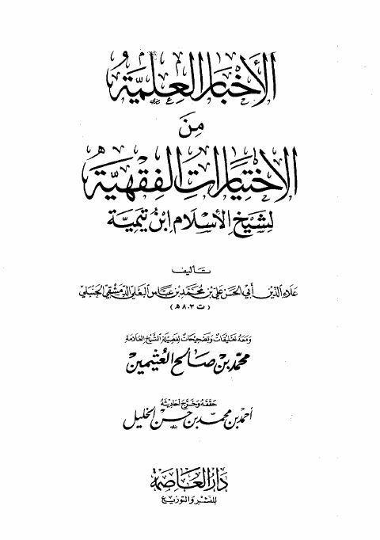
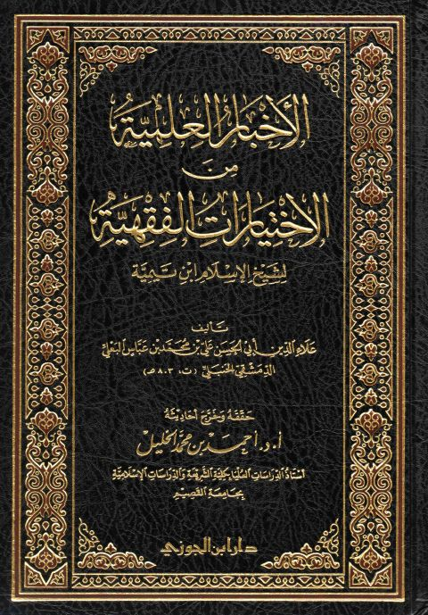

الأخبار العلمية من الاختيارات الفقهية لابن تيمية الأخبار العلمية من الاختيارات الفقهية لابن تيمية علي بن محمد بن عباس البعلي • محمد بن صالح بن عثيمين
الأخبار العلمية من الاختيارات الفقهية لابن تيمية- ط. الدمام الأخبار العلمية من الاختيارات الفقهية لابن تيمية- ط. الدمام علي بن محمد عباس البعلي • محمد بن صالح العثيمين